Penang is located on the northwest coast of Peninsular Malaysia. It has two parts; Penang Island and Seberang Perai which connected by two longest road bridges.
PLACES TO VISIT
ESCAPE ADVENTUREPLAY AND WATERPLAY
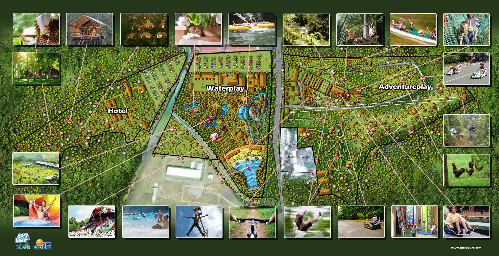
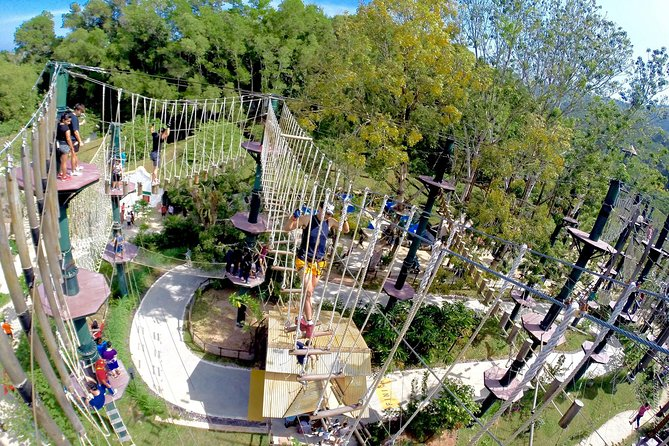
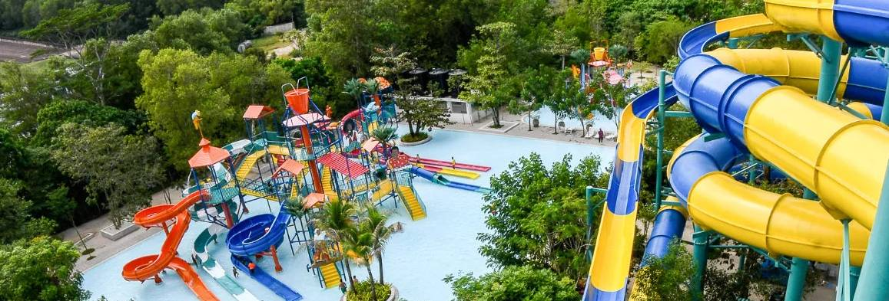
Fun destination with exciting rides and games hosted in a natural environment.
Open from Tuesday to Sunday, Monday open during public and school holiday.
Located in Teluk Bahang, Penang.
PENANG HILL
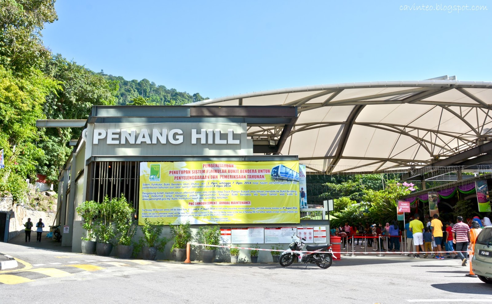
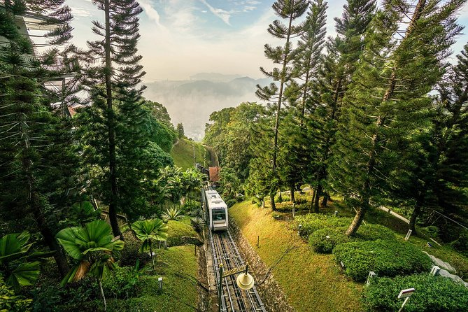
Also known as Bukit Bendera in Georgetown.
People can go up the hill by the train ride.
PENANG BIRD PARK & BUTTERFLY FARM
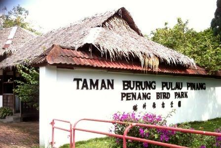
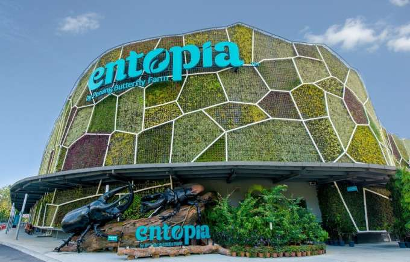
First and largest bird park in Malaysia placed more than 300 species of birds located in Perai, Penang.
The butterfly park in Teluk Bahang, Penang features more than 4,000 butterflies and more than 120 groups of insects and reptiles.
PENANG STREET ART
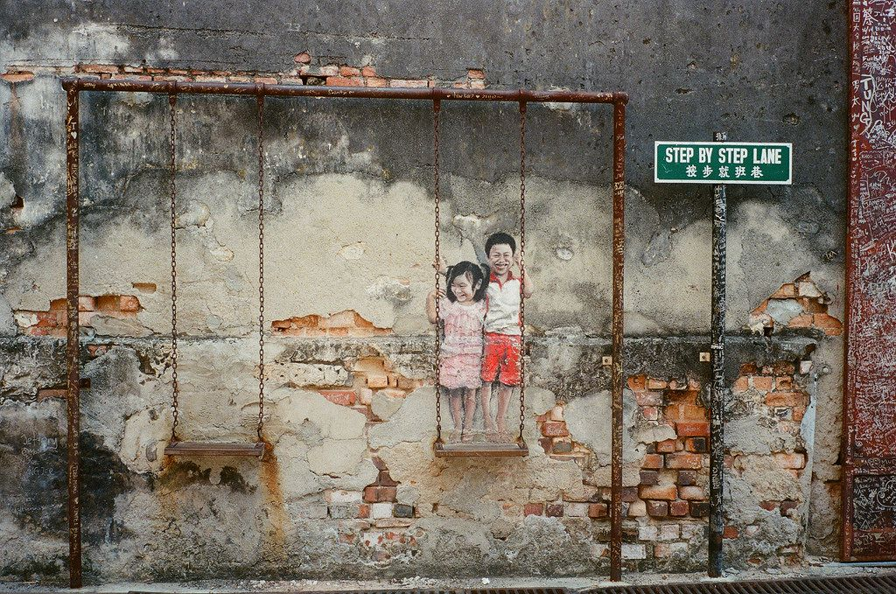
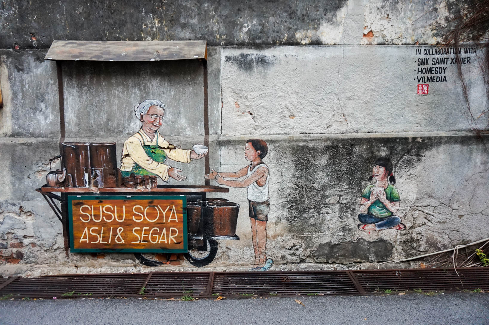
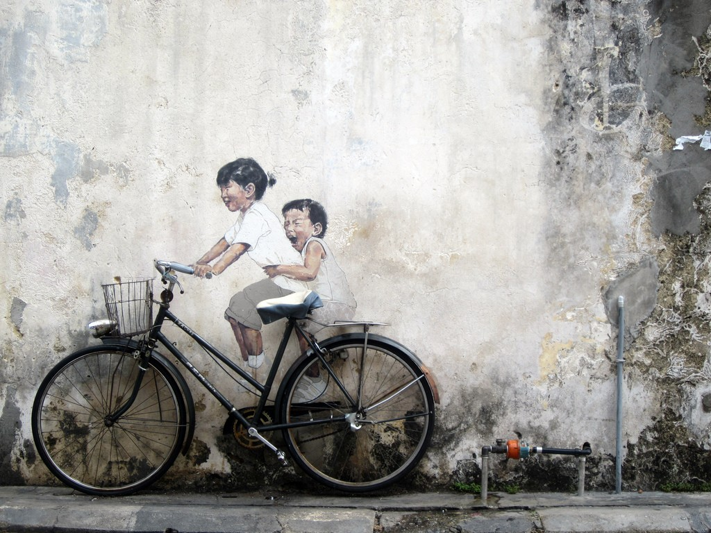
Strolling through the Georgetown's street that full with the paint from London-trained Lithuanian artist.
Best reflect the multi-cultural uniqueness of Malaysia.
BOOKXCESS GURNEY PARAGON
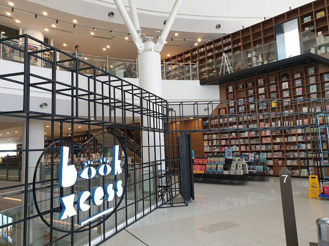
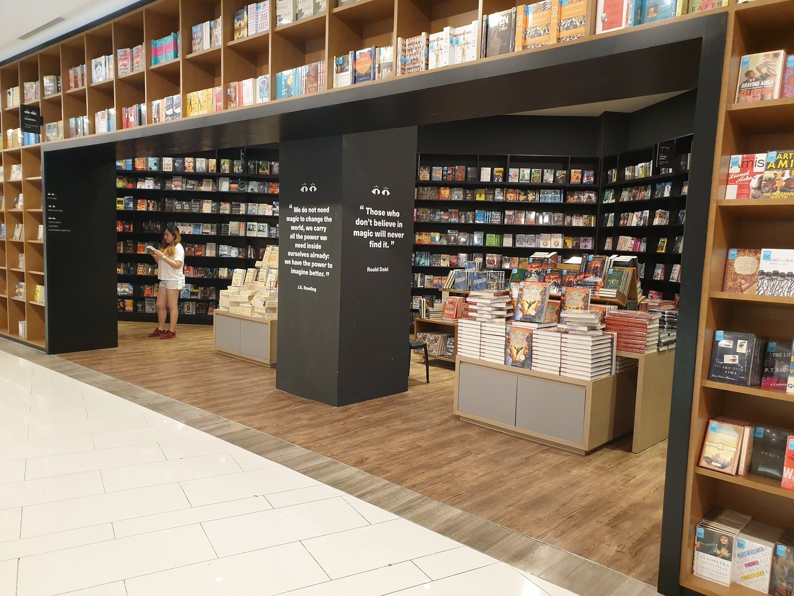
Largest bookstore in Malaysia that occupy entire 7th and 8th floor of Gurney Paragon Mall and a truly haven for bibliophiles.
Books sold with extremely well-priced and stock up so many different genres even the vintage ones.
PLACES TO EAT
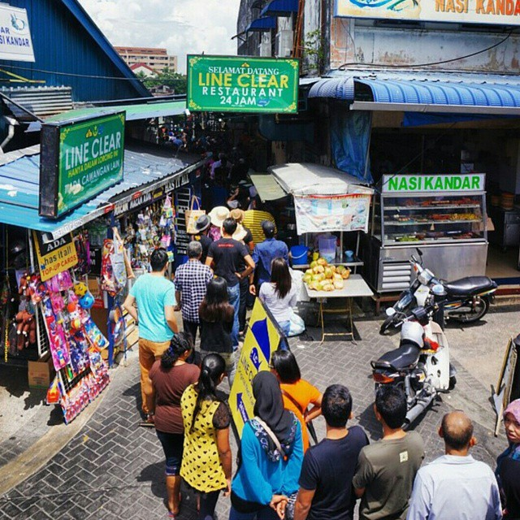
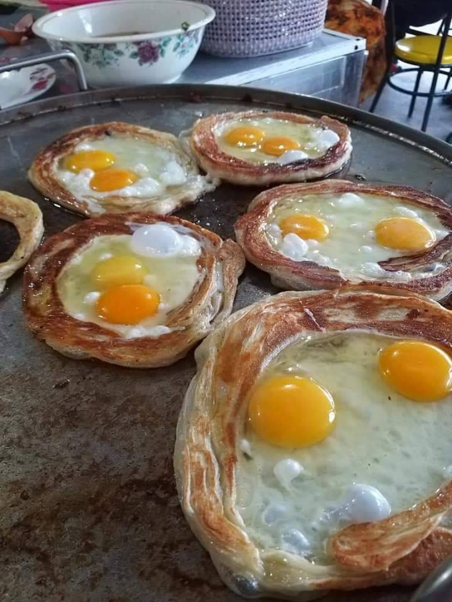
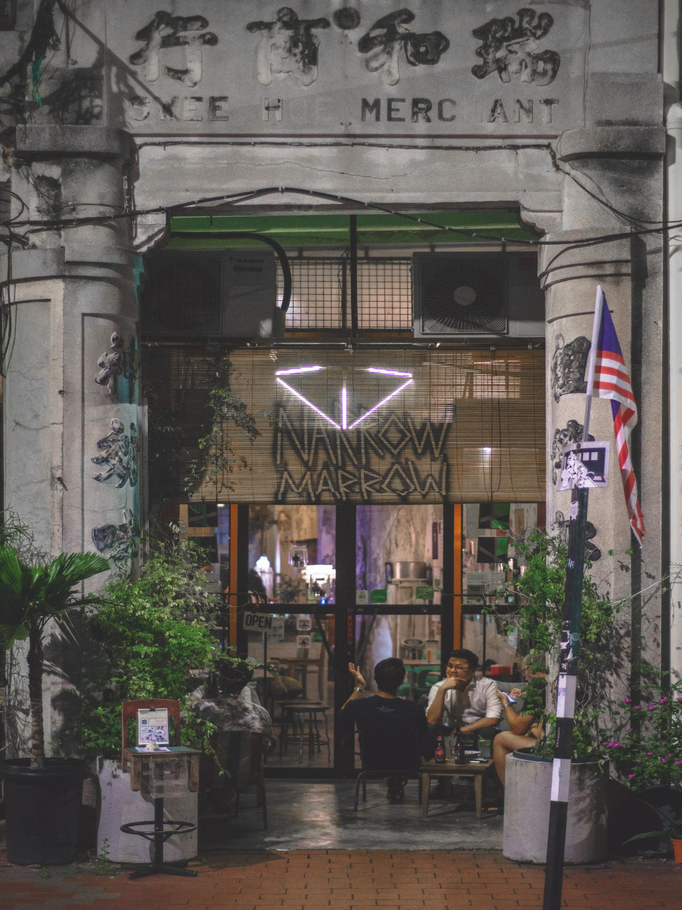
Line Clear Nasi Kandar - famous nasi kandar with a plate of rice, fried chicken, omelette, vegetables and 'kuah banjir'.
Roti Canai Abah - famous with their 'Roti Canai Sarang Burung', located in Balik Pulau.
Narrow Marrow Cafe - located in Lebuh Pantai Penang.
PLACES TO STAY
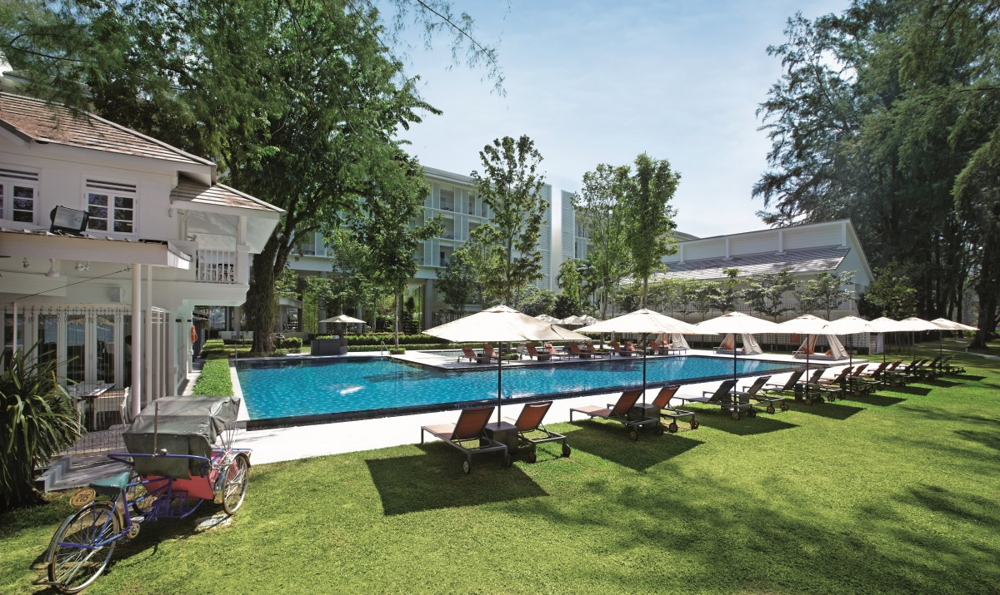
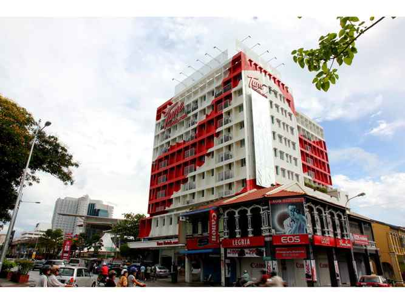
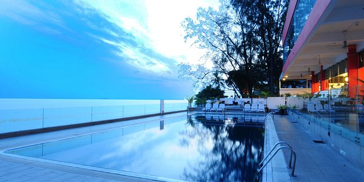
Lone Pine Hotel - Batu Feringhi, 4 star hotel.
Tune Hotel - located in Downtonw Penang, 3 star hotel, nearby to 1st Avenue Mall and Penang Times Square.
Hotel Sentral Seaview - located in Tanjung Tokong Beach, 3 star hotel, nearby the airport and Georgetown city.
You also can check out this ig for more review about places in Penang